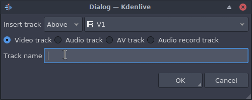
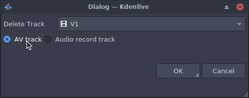

Tracks¶
Contents
The submenu for inserting/deleting tracks can also be displayed by right-clicking the track title (anywhere except the track name).
Master effects¶
Let user quickly apply audio or video effects to all tracks. This can be useful if you want one or more effects to be applied throughout the video.
Insert Track¶
Displays a dialog which lets you choose which type of track to insert and where – before or after a specified existing track.
Delete Track¶
Displays a dialog which lets you choose which track to delete.
Select All in Current Track¶
Selects all clips in the current track.
Select All¶
Selects all clips in all tracks.
Deselect¶
Cancels the selection.
Toggle Track Lock¶
Disables or allows editing on the selected track.
Toggle All Track Lock¶
Disables or allows editing on all tracks.
Toggle Track Target¶
Click to toggle track as target. Target tracks will receive the inserted clips.
Toggle Track Аctive¶
Click to make track active/inactive. Active tracks will react to editing operations.